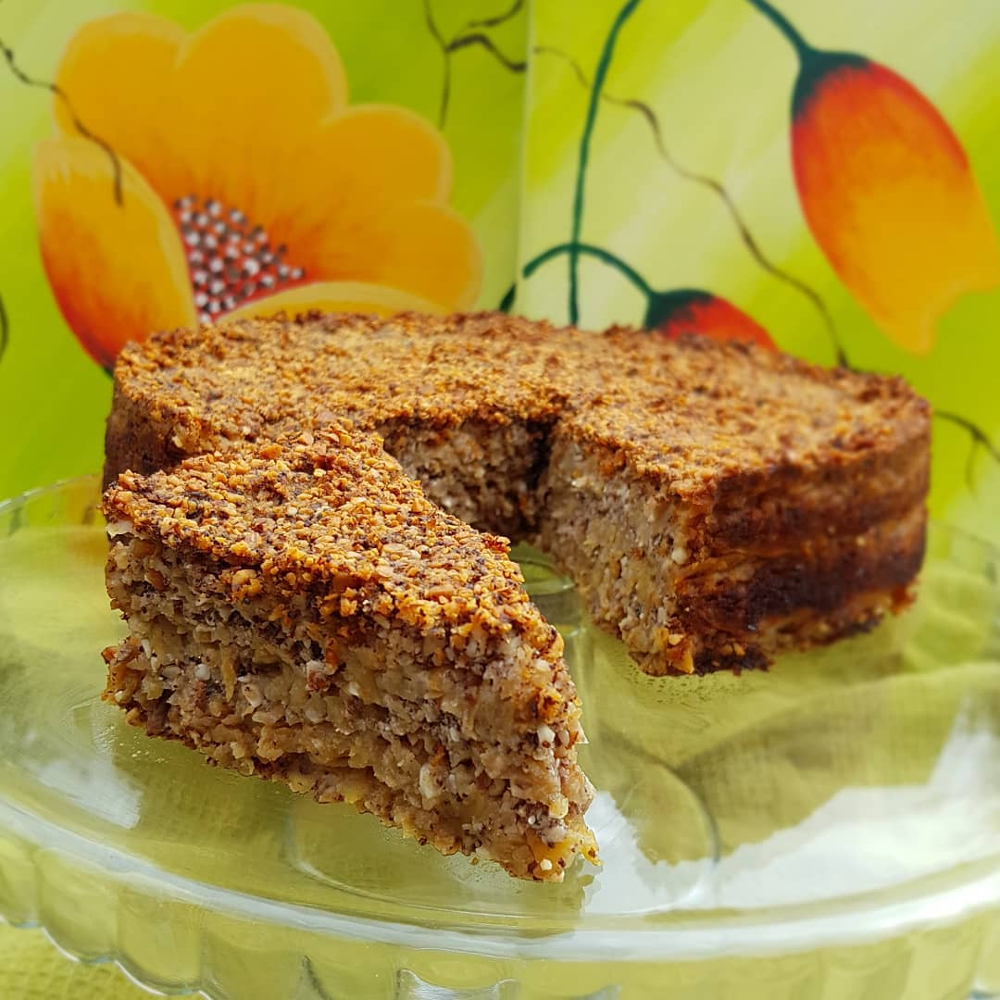

Bezcukrový, bezlepkový a bezlatózový jablkový koláčik🍎
Viem, že tento koláčik by súťaž krásy asi nevyhral😂, ale chuťovo je proste vynikajúci. Je to môj najobľúbenejší zákusok, či už k poobedňajšej kávičke alebo na raňajky. A ako bonus je naozaj zdravý 😁.
Pre milovníkov jabĺk je ako stvorený 😍
PS: Kto uhádne, koľko je tam nastrúhaných jabĺk?😂
#applecake #applecake🍎 #jablkovykolac #glutenfree #sugarfree #lactosefree #fitcake #zdravykolac #apple #jablko #skvelachut #vegan #vegancake #amazingtaste #breakfastcake #caketocoffee